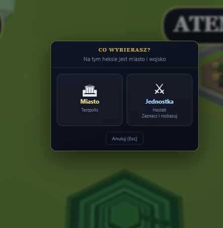

Domyślny
Miasto + Jednostka
Hint: Zaznacz i rozkazuj
Anuluj (Esc)
ZLECENIE-ID: A21-CITY-UNIT-PICK-2026-07-05
Problem: Modal „Co wybierasz?” = szkic lane Cursor bez mockupu Design. Gameplay A2-Q5 ✅ · wygląd do poprawy.
Cel: 1 mockup 1E · SVG zamiast emoji · symetryczne kafelki złote.
Pełna spec: docs/ux/DESIGN-ZLECENIE-A21-CITY-UNIT-PICK-2026-07-05.md
ZIP: A21-CITY-UNIT-PICK-2026-07-05.zip

| Element | Stan dziś | Docelowo 1E |
|---|---|---|
| Ikona Miasto | Emoji 🏛 (U+1F3DB) | SVG icon-city-panel.svg |
| Ikona Jednostka | Emoji ⚔ (U+2694) | SVG kategorii B (JEDNOSTKI-INFOGRAFIKI) |
| Label „Jednostka” | Niebieski #a8d4ff | Złoty jak „Miasto” — symetria kafelków |
| Hover jednostka | Niebieski border/background | Złoty outline jak miasto |
| Mockup Design | Brak (A-21 ⬜) | .dc.html v1 2026-07-05 |
| Gameplay / treść | OK · A2-Q5 | Bez zmian pól |
┌─────────────────────────────────────────┐
│ CO WYBIERASZ? │
│ Na tym heksie jest miasto i wojsko │
├──────────────────┬──────────────────────┤
│ [SVG miasto] │ [SVG jednostka] │
│ Miasto │ Jednostka │
│ {cityName} │ {unitLabel} │
│ │ Zaznacz i rozkazuj │
├──────────────────┴──────────────────────┤
│ Anuluj (Esc) │
└─────────────────────────────────────────┘
gra-kanon/Gra-podglad.htmlgra/src/ui/cityUnitPick.tsdocs/decyzje/A2-Q5-miasto-vs-jednostka-klik.mdARMY-MERGE-A18-2026-07-05 — panel stosu / merge (ten sam styl modali mapy)C04-C05-A19-mapa-v2_2026-07-04 — oblężenie (mockup GOTOWY · czeka port lane)JEDNOSTKI-INFOGRAFIKI-1E-2026-07-05 — SVG jednostek